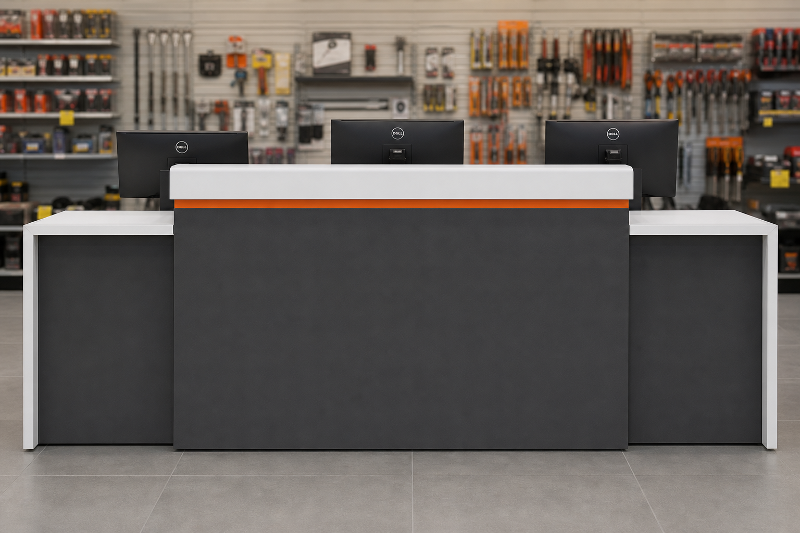
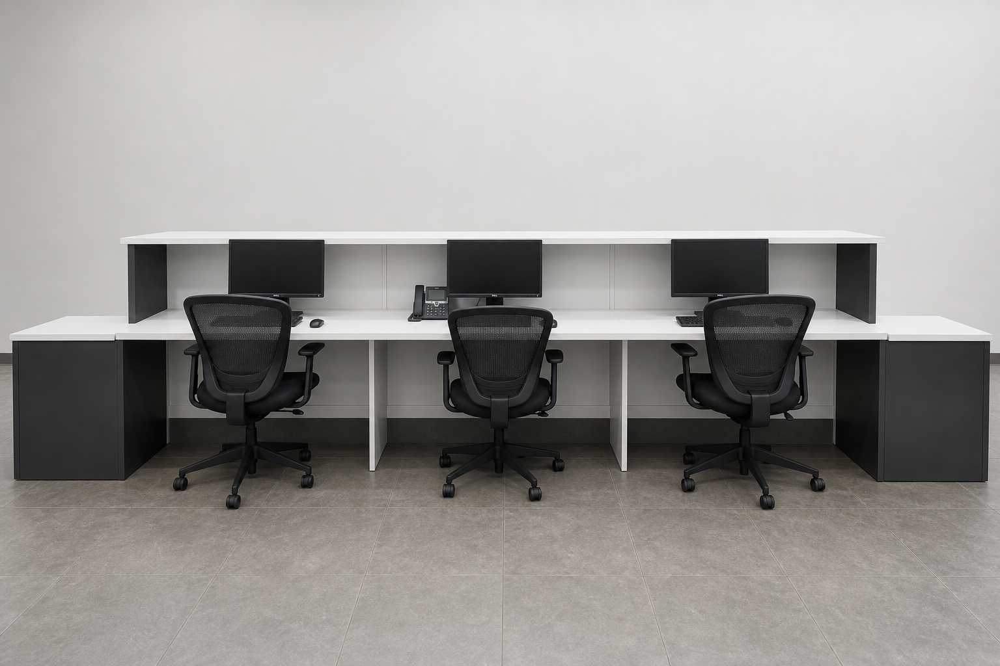
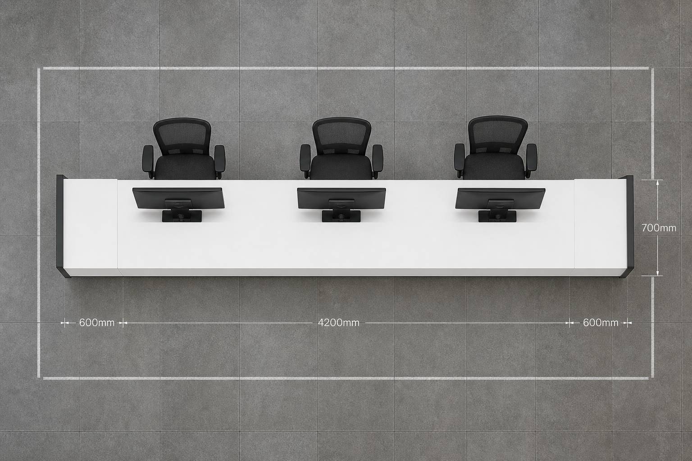
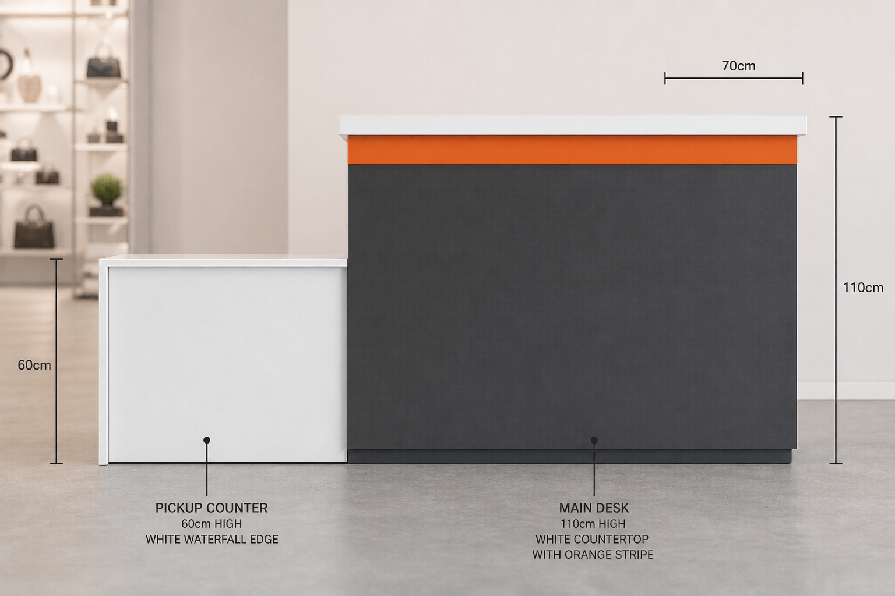
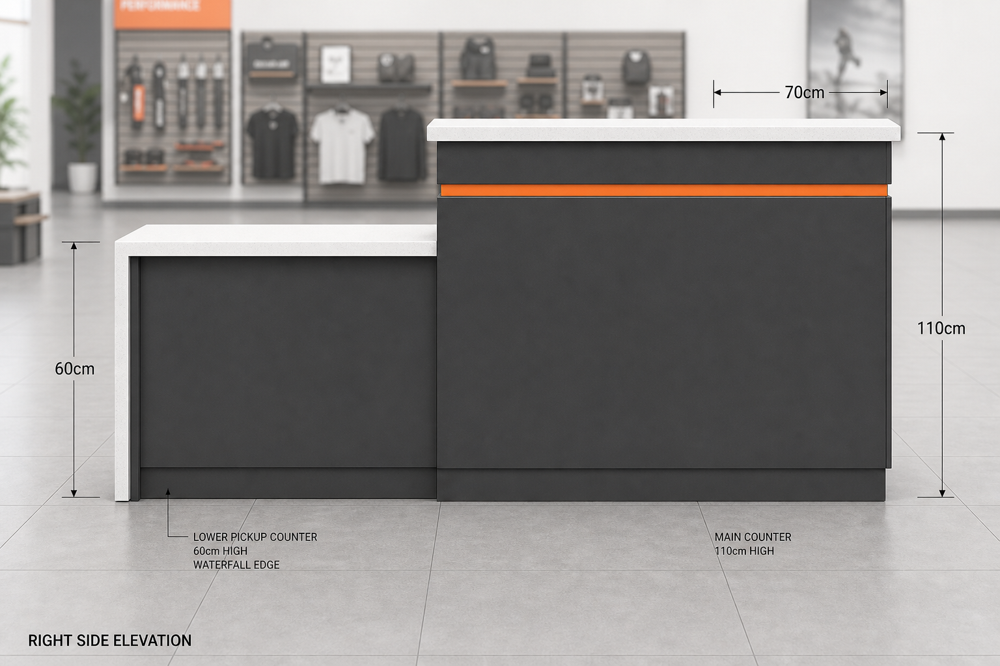

Виды со всех сторон





Сборочный чертёж (габариты)
5400
общая длина, мм
4200
основная стойка, мм
2×600
выдача по бокам, мм
700
глубина, мм
1100 / 900
высота основа / выдача
38
столешница, мм
Фасад (вид спереди) — размеры в мм
План сверху — размеры в мм
Сечение / вид сбока — размеры в мм
Чертёж раскроя (распил)
Материалы: ЛДСП 18 мм антрацит (фасады, боковины, цоколь) ·
компакт / ЛДСП 38 мм белый (столешницы, водопад) ·
кромка ПВХ 0,4 / 2 мм · оранжевая вставка 8×8 мм (акриловая полоса или окантовка).
Припуск на кромку уже учтён в чистых размерах раскроя (готовые габариты).
А. Столешницы — белый 38 мм
Б. Фасады и каркас — ЛДСП 18 мм антрацит
В. Карта раскроя листа ЛДСП 2800 × 2070 × 18 (рекомендация)
Ведомость деталей для распила
| № | Деталь | Кол-во | Длина × Ширина × Толщ. | Материал | Кромка |
|---|---|---|---|---|---|
СТ-1 |
Столешница основная | 1 | 4200 × 700 × 38 |
Белый компакт / ЛДСП 38 | 2 мм все торцы |
СТ-2 |
Столешница выдача левая | 1 | 600 × 700 × 38 |
Белый 38 | 2 мм |
СТ-3 |
Столешница выдача правая | 1 | 600 × 700 × 38 |
Белый 38 | 2 мм |
СТ-4 |
Водопад левый (вертикаль) | 1 | 700 × 900 × 38 |
Белый 38 | 2 мм видимые |
СТ-5 |
Водопад правый (вертикаль) | 1 | 700 × 900 × 38 |
Белый 38 | 2 мм видимые |
Ф-1а/б |
Фасад основной (2 части) | 2 | 2100 × 982 × 18 |
ЛДСП антрацит 18 | 0,4/2 мм |
Ф-2 |
Фасад выдачи левый | 1 | 600 × 782 × 18 |
ЛДСП антрацит 18 | 0,4/2 мм |
Ф-3 |
Фасад выдачи правый | 1 | 600 × 782 × 18 |
ЛДСП антрацит 18 | 0,4/2 мм |
Б-1 |
Боковина основная левая | 1 | 682 × 1062 × 18 |
ЛДСП антрацит 18 | 2 мм верх |
Б-2 |
Боковина основная правая | 1 | 682 × 1062 × 18 |
ЛДСП антрацит 18 | 2 мм верх |
Б-3 |
Боковина выдачи левая (внутр.) | 1 | 682 × 862 × 18 |
ЛДСП антрацит 18 | 2 мм верх |
Б-4 |
Боковина выдачи правая (внутр.) | 1 | 682 × 862 × 18 |
ЛДСП антрацит 18 | 2 мм верх |
П-1 |
Перегородка место 1|2 | 1 | 682 × 900 × 18 |
ЛДСП антрацит 18 | — |
П-2 |
Перегородка место 2|3 | 1 | 682 × 900 × 18 |
ЛДСП антрацит 18 | — |
Ц-1а/б |
Цоколь основной (2 части) | 2 | 2092 × 80 × 18 |
ЛДСП антрацит 18 | — |
Ц-2 |
Цоколь выдачи левый | 1 | 584 × 80 × 18 |
ЛДСП антрацит 18 | — |
Ц-3 |
Цоколь выдачи правый | 1 | 584 × 80 × 18 |
ЛДСП антрацит 18 | — |
С-1 |
Царга / связь основная | 2 | 4164 × 120 × 18 |
ЛДСП антрацит 18 | — |
С-2 |
Царга выдачи | 2 | 564 × 120 × 18 |
ЛДСП антрацит 18 | — |
ОП-1 |
Оранжевая акцентная полоса | 1 | 4200 × 8 × 8 |
Акрил / PVC orange | — |
Сборка: конфирмат / минификс · столешница на евровинты снизу ·
цоколь заглублён на 50 мм от фасада ·
Ф-1 стык по центру (за местом 2) закрыть стыковочным профилем или усилить планкой сзади ·
СТ-1 при длине 4200 — стык или заказ цельной плиты ·
водопад СТ-4/СТ-5 клеить к торцу СТ-2/СТ-3 (клей PU + стяжки).